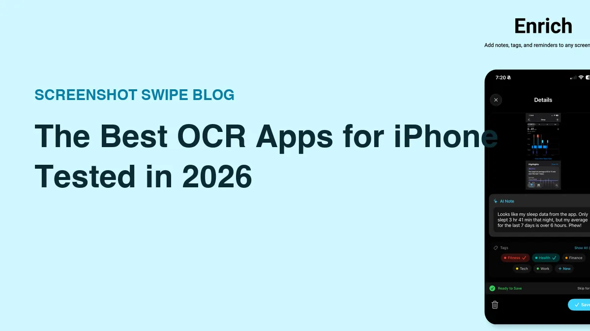
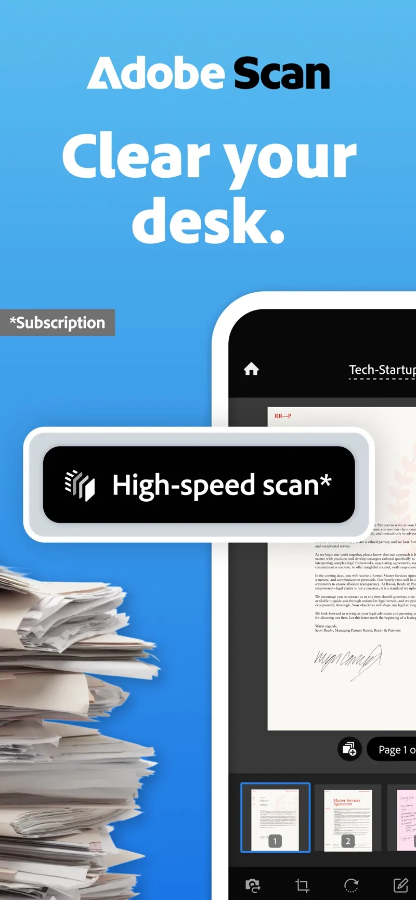
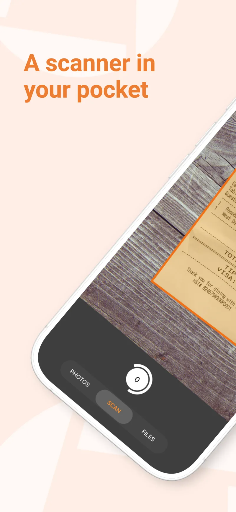
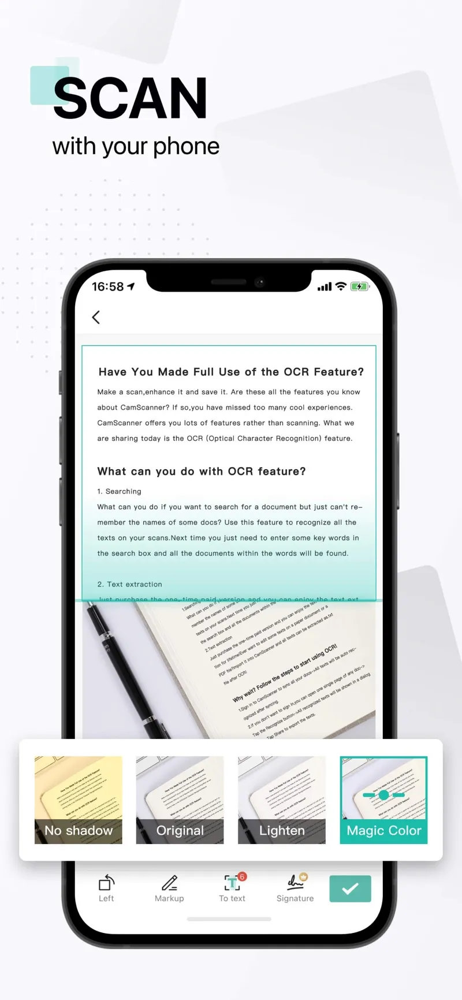
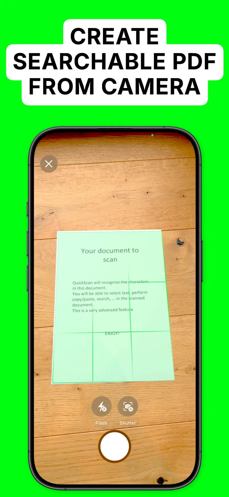

The 5 Best OCR Apps for iPhone (2026)

Quick answer: For paper documents, Adobe Scan and Genius Scan are the best OCR apps on iPhone — both produce searchable PDFs with excellent accuracy. For screenshots, Screenshot Swipe indexes everything you keep for full-text search. CamScanner adds heavy-duty editing, QuickScan is the free power pick, and Apple's Live Text handles quick one-off grabs.
The text is right there in the image. A phone number on a flyer, a receipt total, a paragraph in a screenshot — and you're typing it out by hand like it's 2009.
OCR (optical character recognition) turns that image text into real, selectable, searchable text. iPhones do some of this natively now, so the first question is what the built-in tools miss — then which app covers your specific gap.
Disclosure: Screenshot Swipe is our app. Ratings pulled from the iTunes API on July 18, 2026. Microsoft Lens, a longtime favorite in this category, was retired from the App Store and is deliberately absent.
What can iPhone's built-in Live Text already do?
Since iOS 15, you can press-and-hold text in almost any photo or screenshot to select and copy it, point the camera at text and grab it live, and sometimes find photos by their text in Spotlight. For one-off grabs — copy this address, call this number — Live Text is genuinely good, free, and already installed.
The gaps show at scale. Spotlight's coverage of your screenshot library is inconsistent, there's no way to batch-OCR documents into searchable PDFs, and nothing gets organized. The five apps below each fix a different part of that.
1. Screenshot Swipe — best for searching your screenshots

Every screenshot you keep gets OCR'd on-device and becomes full-text searchable.
Platform: iOS App Store · Price: Free, optional Pro for AI Smart Review · Rating: 5.0 ★ (5 ratings)
The other apps here OCR documents you scan on purpose. Screenshot Swipe OCRs the text you've been accidentally collecting for years — your screenshots. Every screenshot you keep during its swipe-triage flow gets on-device text extraction (Apple's Vision framework, no server involved), and the whole collection becomes searchable: type "sourdough" and the recipe screenshot from March surfaces.
Keeps also take notes, tags, and reminders, so the OCR search combines with human context. The limits are scope-based: screenshots only, no camera capture, no PDF export. It's a search layer for saved information rather than a scanner.
2. Adobe Scan — best for documents and PDFs

Adobe Scan auto-detects edges and turns captures into searchable PDFs.
Platform: iOS App Store · Price: Free, premium for export/compression extras · Rating: 4.9 ★ (1,569,015 ratings)
The default recommendation for paper. Point it at a document and it finds the edges, deskews, cleans the lighting, and produces a searchable PDF with OCR text underneath — free, including multi-page documents. The Acrobat integration matters if PDFs are part of your work life; scans flow straight into Adobe's ecosystem.
The trade-off is that ecosystem: it wants an Adobe account, nudges toward Acrobat subscriptions, and processes in Adobe's cloud.
3. Genius Scan — best privacy-respecting scanner

Genius Scan processes on-device — a scanner without a cloud attached.
Platform: iOS App Store · Price: Free, one-time/plus tiers for OCR and export features · Rating: 4.9 ★ (1,344,911 ratings)
Grizzly Labs has maintained Genius Scan for over a decade, and it's the scanner for people who don't want an account or a cloud. Processing runs on-device, exports go where you tell them (Files, email, your own cloud), and the OCR produces searchable PDFs with accuracy comparable to Adobe's.
The full OCR feature set sits behind a paid tier, and the interface is more utilitarian than Adobe's. For sensitive documents — medical, legal, financial — the on-device processing is the deciding feature.
4. CamScanner — best all-in-one document workshop

CamScanner layers OCR with filters, editing, and format conversion.
Platform: iOS App Store · Price: Free with ads/watermarks, subscription for full features · Rating: 4.9 ★ (1,846,882 ratings)
The maximalist option. Beyond scan-and-OCR, CamScanner converts to Word and Excel, batch-processes, translates extracted text, and edits PDFs. If you process a high volume of varied documents and want one app for the whole pipeline, this is the deepest toolbox in the category.
The free tier is heavily gated — watermarks, ads, and persistent upsells — and processing is cloud-based. It rewards subscribers and frustrates free users.
5. QuickScan — best fully-free scanner

QuickScan's searchable-PDF pipeline is free, without ads or watermarks.
Platform: iOS App Store · Price: Free (tip jar) · Rating: 4.9 ★ (3,858 ratings)
The indie sleeper. QuickScan does searchable-PDF OCR, on-device, with no ads, no watermarks, no subscription — the developer runs a tip jar. Its rating count is a fraction of the giants above, but the rating itself (4.9) reflects how rare a genuinely free, genuinely good scanner is.
Fewer power features than CamScanner and a smaller team behind it; as with any solo-dev tool, long-term maintenance is the bet you're making. It's the first one to try before paying anyone.
How do the five compare?
| Feature | Screenshot Swipe | Adobe Scan | Genius Scan | QuickScan | CamScanner |
|---|---|---|---|---|---|
| Primary target | Screenshots | Paper docs | Paper docs | Paper docs | Paper docs |
| On-device OCR | Yes | Cloud | Yes | Yes | Cloud |
| Search across library | Yes | Within Acrobat | Within app | Within app | Within app |
| Searchable PDF export | No | Yes | Yes | Yes | Yes |
| Free tier | Triage + OCR search | Generous | Core free | Everything | Heavily gated |
| Account required | No | Yes | No | No | Yes |
| Rating (Jul 2026) | 5.0 ★ (5) | 4.9 ★ (1.6M) | 4.9 ★ (1.3M) | 4.9 ★ (3.9k) | 4.9 ★ (1.8M) |
Frequently asked questions
What is the best OCR app for iPhone?
For paper documents, Adobe Scan and Genius Scan lead — both produce searchable PDFs with excellent accuracy. For screenshots, Screenshot Swipe indexes everything you keep for full-text search. For one-off grabs, built-in Live Text needs no install.
Does iPhone have built-in OCR?
Yes — Live Text. Select and copy text in photos, screenshots, and through the camera. Its weakness is reliability at scale: search coverage across a large screenshot library is inconsistent, which is the gap dedicated apps fill.
Are OCR apps accurate?
On clean printed text, modern OCR is generally excellent. Screenshots OCR nearly perfectly because the text is digitally rendered. Accuracy drops on handwriting, poor lighting, skewed angles, and stylized fonts.
Do OCR apps work offline?
Some. Apps on Apple's Vision framework — Live Text, Screenshot Swipe, Genius Scan, QuickScan — process on-device. CamScanner and Adobe Scan lean on cloud processing, which matters for sensitive documents.
Can I search the text inside my old screenshots?
Yes. Spotlight catches some via Live Text, but coverage is spotty. A screenshot manager that OCRs every screenshot you keep gives dependable full-text search over the whole collection.
Match the app to the text
- One-off grab? Press and hold the text in the photo — Live Text is already there.
- Paper documents regularly? Adobe Scan for the Acrobat crowd, Genius Scan for privacy, QuickScan to pay nothing.
- High-volume document processing? CamScanner's subscription earns its keep.
- A screenshot library you can never find anything in? That's the job Screenshot Swipe was built for.
Keep the image and its context together.
Screenshot Swipe is free to start. Search screenshot text with on-device OCR and add notes and tags to the images you want to find again.
Download on theApp Store